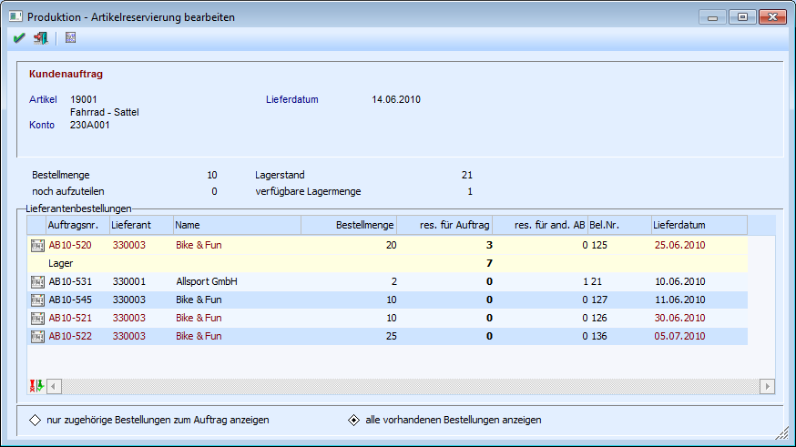
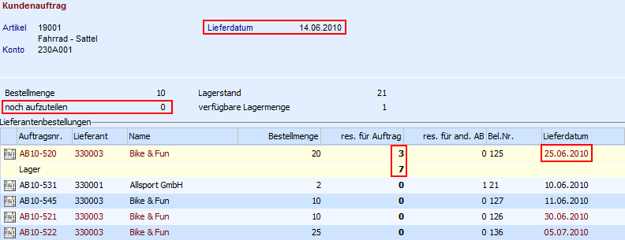
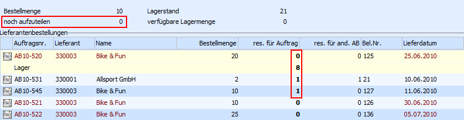
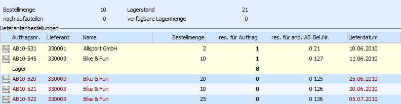

Innerhalb des Fensters "Stückliste bearbeiten", welches über den Menüpunkt
1 WinLine PPS
1 Produktion
1 Produktionskorrektur
erreichet wird, kann über das Drücken der rechten Maustaste bei einer Komponente und Anwahl des Punkts
1
der Programmbereich "Produktion - Artikelreservierung bearbeiten" geöffnet werden.
Voraussetzung
ü In den FAKT-Parametern (WinLine Start - Parameter - Applikations-Parameter - FAKT-Parameter - Artikel - Allgemein) muss die Option "Res. verwenden" aktiviert sein.
ü In den Artikelstammdaten der Komponente (WinLine FAKT - Stammdaten - Artikelstamm - Artikel - Register "Lager") muss die Option "Prod./Bestellung" auf "Bestellung mit Reservierung" hinterlegt worden sein.
In diesem Fenster kann die Reservierung der Komponenten bearbeitet werden.
Hinweis
Die Reservierung kann auch über das Programm "Artikelreservierung bearbeiten" aus WinLine FAKT (Einkauf - Reservierung - Reservierungen bearbeiten) angepasst.

In den beiden oberen Bereichen des Bildschirms werden Informationen zu der Komponente und dem zugehörigen Auftrag angezeigt.
Ø Artikel
An dieser Stelle wird die Artikelnummer und die Bezeichnung der Komponente angezeigt.
Ø Konto
Wenn dem Produktionsauftrag ein Kundenkonto zugeordnet wurde, dann wird an dieser Stelle die entsprechende Kontonummer angezeigt.
Hinweis
Die Zuordnung kann folgendermaßen vorgenommen werden:
ü manuell im Programm Produktionsvorbereitung - Feld "Kundennummer"
ü manuell im Programm Arbeitsschrittstatus - Feld "Kundennummer"
ü automatisch, wenn ein auftragsbezogener Produktionsartikel über die Belegerfassung von WinLine FAKT an WinLine PROD übergeben wird
Ø Lieferdatum
Dieses Datum zeigt an, zu welchem Zeitpunkt die Komponente für die Produktion benötigt wird.
Ø Bestellmenge
An dieser Stelle wird die aktuell bestellte Menge der Komponente ausgewiesen.
Ø noch aufzuteilen
An dieser Stelle wird die für den Produktionsauftrag benötigte Menge der Komponente, welche noch nicht auf "Bestellungen" oder auf´s "Lager" aufgeteilt wurde, angezeigt.
Ø Lagerstand
An dieser Stelle wird der gesamte momentan vorhandene Lagerstand ausgewiesen.
Ø verfügbare Lagermenge
An dieser Stelle wird die momentan verfügbare Lagermenge (Lagerstand abzüglich aller Lagerreservierungen) ausgewiesen.
Tabelle
An dieser Stelle kann die Reservierung bzw. Umreservierung der Komponente vorgenommen werden. Dafür wird in der Tabelle eine Zeile mit "Lager", sowie Bestellungen, welche die Komponente beinhalten, aufgelistet.
Hinweis
Der Umfang der angezeigten Bestellungen kann durch folgende Einstellungen, welche sich unterhalb der Tabelle befinden, beeinflusst werden:
Ø nur zugehörige Bestellung zum Auftrag anzeigen
Es werden nur die offenen Lieferantenbestellungen angezeigt, von denen bereits Mengen für diesen Produktionsauftrag reserviert wurden.
Ø alle vorhandenen Bestellungen anzeigen,
Es werden alle offenen Lieferantenbestellungen angezeigt, in denen die Komponente bestellt wurde.
Folgende Spalten stehen in der Tabelle zur Verfügung:
Ø Auftragsnummer
Hier wird die Belegnummer der Lieferantenbestellung ausgewiesen. Handelt es sich um die Lagerzeile, dann steht an dieser Stelle "Lager".
Ø Lieferant
An dieser Stelle wird bei Bestellungen die Nummer des zugehörigen Lieferanten angezeigt.
Ø Name
An dieser Stelle wird bei Bestellungen der Name des zugehörigen Lieferanten angezeigt.
Ø Bestellmenge
Bei einer Lieferantenbestellung wird hier die gesamte Bestellmenge für diese Komponente angezeigt.
Ø res. für Auftrag
Hier werden die Mengen angezeigt bzw. können überarbeitet werden, welche für den Produktionsauftrag reserviert wurden.
ü Im Falle der Lagerzeile wird hier angegeben wie viele Stück vom Lager für diesen Produktionsauftrag reserviert werden soll.
ü Im Falle einer Lieferantenbestellung wird hier angegeben wie viele Stück von der Lieferantenbestellung für diesen Produktionsauftrag reserviert werden soll.
Hinweis
Mit der Taste F3 kann die Restmenge (Menge unter dem Feld "noch aufzuteilen") die noch nicht reserviert wurde) übernommen werden.
Beispiel

Für einen Produktionsauftrag werden 10 Stk. des Artikels "19001" benötigt. Dieses ermittelt sich wie folgt:
Reservierung von Bestellungen 3 Stk.
+ Reservierung vom Lager 7 Stk.
+ noch aufzuteilen 0 Stk.
= benötigte Komponentenanzahl 10 Stk.
Momentan ist die Reservierung so aufgeteilt, dass 7 Stk. vom Lager genommen werden und 3 Stk. aus der Bestellung "AB10-520". Das Problem hierbei ist nun, dass die Bestellung "AB10-520" erst am 25.06.2010 geliefert wird, aber die Komponente 19001 bereits am 14.06.2010 verarbeitet werden soll.

Damit am 11.06.2010 genügend Stk. vorhanden sind muss umreserviert werden. Zunächst wird die
Reservierungsmenge bei der Bestellung "AB10-520" auf 0 Stk. reduziert (die Anzahl bei "noch aufzuteilen" ändert sich dadurch von 0 Stk, auf 3 Stk.).
Da noch 1 Stk. vom Lager verfügbar ist, wird anschließend die Menge in der Lagerzeile von 7 Stk. auf 8 Stk. erhöht. Mit dem Auftrag "AB10-531" (Lieferdatum 10.06.2010) wurden zwar 2 Stk. bestellt, allerdings wurde 1 Stk. bereits für einen anderen Auftrag verplant. Die Reservierungsmenge wird daher auf den Maximalwert von 1 Stk. gesetzt.
Die noch fehlende 1 Reservierung wird zum Abschluss von der Bestellung "AB10-545" (Lieferdatum 11.06.2010) reserviert.
Nach dem Abspeichern der Änderungen sieht die Reservierung wie folgt aus:

Ø res. für and. AB
Wurden bereits Mengen vom Lager oder von einer Lieferantenbestellung für einen anderen Auftrag reserviert, dann wird an dieser Stelle die entsprechende Stückzahl als Info ausgewiesen.
Ø Bel.Nr.
Bei einer Lieferantenbestellung wird hier die Laufnummer des Belegs angezeigt.
Ø Lieferdatum
Bei einer Lieferantenbestellung wird hier das (voraussichtliche) Lieferdatum angezeigt.
Hinweis
Alle Lieferantenbestellungszeilen, bei denen das Datum größer ist als das "Lieferdatum" aus dem Kopfbereich, werden in rot dargestellt.
Tabellenbuttons
Ø  Umkehr
Umkehr
Durch Anklicken dieses Buttons werden alle vorgenommenen Änderungen, welche noch nicht gespeichert wurden, wieder rückgängig gemacht.
Buttons
Ø  OK
OK
Durch Drücken dieses Buttons werden alle getätigten Änderungen abgespeichert.
Ø  Ende
Ende
Der Programmbereich wird verlassen. Wurde der OK-Button noch nicht gedrückt, dann werden alle getätigten Änderungen nicht gespeichert.
Ø  Info
Info
Durch Drücken dieses Buttons wird die Auswertung "Reservierungsliste (Aufträge)" am Bildschirm ausgegeben. In dieser werden sämtliche Produktionsaufträge, für welche die Ressource benötigt wird, aufgelistet bei denen es Konflikte gibt, d.h. bei denen Reservierungszeilen fehlen.